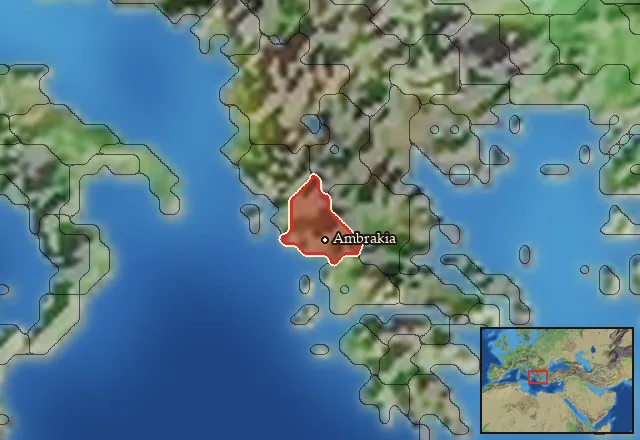

RTR: Imperium Surrectum
RTR: Imperium SurrectumRIS wiki › RIS Light › mercenaries
Ambrakia
Main campaignRIS Light
← all mercenary pools · wiki index
Mercenary pool: 9 units for hire in 1 region.

Mercenaries
| Unit | Cost (dn) | Experience | At start | Most in pool | Added per turn | Who can hire | |
|---|---|---|---|---|---|---|---|
| Mercenary Akarnanian Hoplites | 3,747 | 1 | 1 | 2 | 0.069–0.137 | Only Epirus | |
| Mercenary Galatian Swordsmen | 3,934 | 1 | 1 | 2 | 0.065–0.131 | Only Epirus | |
| Mercenary Phalangites | 4,694 | 3 | 2 | 2 | 0.055–0.11 | Only Epirus | |
| Mercenary Aitolian Peltasts | 3,601 | 1 | 1 | 1 | 0.072–0.143 | Only Epirus | |
| Mercenary Akarnanian Slingers | 3,519 | 1 | 1 | 2 | 0.073–0.146 | Only Epirus | |
| Mercenary Athamanian Peltasts | 4,041 | 3 | 1 | 1 | 0.064–0.127 | Only Epirus | |
| Mercenary Tarantine Cavalry | 3,738 | 2 | 2 | 2 | 0.069–0.138 | Only Epirus | |
| Mercenary Aitolian Cavalry | 4,621 | 4 | 1 | 1 | 0.056–0.111 | Only Epirus | |
| Mercenary Thessalian Cavalry | 4,699 | 4 | 1 | 1 | 0.055–0.11 | Only Epirus |